Yamamoto
Yamamoto · Miyagi
Yamamoto
Highlighted on the Miyagi map.
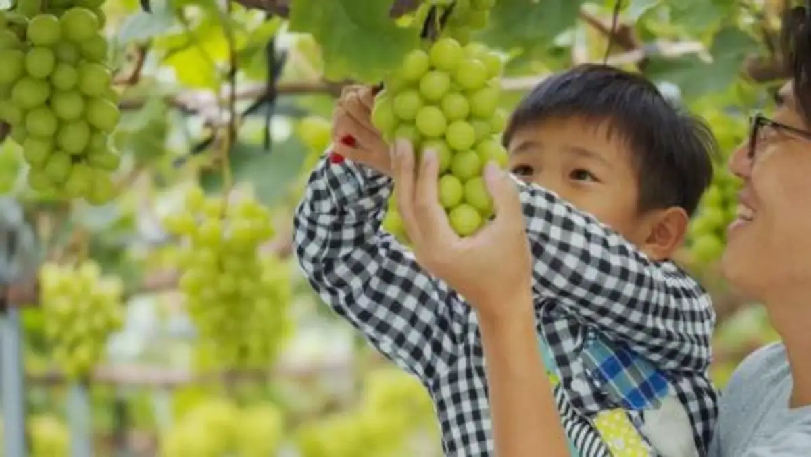
Dining
田園 山元店
Den'en Yamamoto Mise
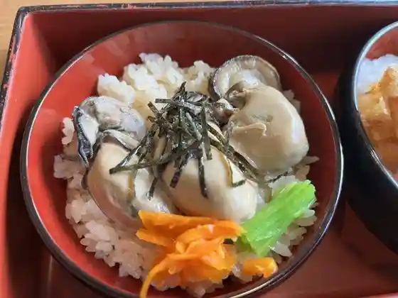
濃厚タンメン トミー
Noukou Tanmen Tomii
魚や たけだ
Sakanaya Takeda
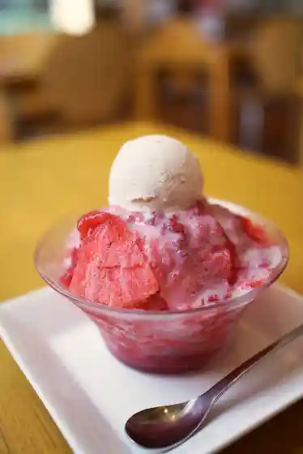
ベリーベリーラボ
Beriiberiirabo
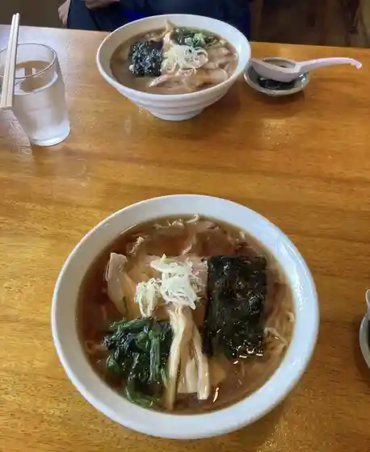
金ちゃんラーメン
Kin Chan Raamen
和食・そば処 蕃山 山元店
和食・そば処 蕃山 山元店
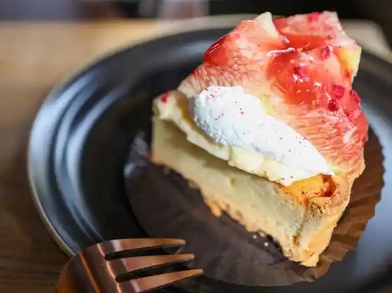
プチット ジョア
Puchitto Joa
プチットジョアストーリーズ
Puchittojoasutooriizu
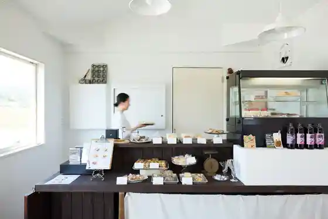
MIGAKI FARM CAFE 山元店
MIGAKI FARM CAFE
結工房
Ketsu Koubou
ラーメン せん家 山元店
Raamen Sen Ie Yamamoto Mise
旬魚酒房 金八
Shungyo Sake Bou Kinpachi
ブロート ドルフ
Burooto Dorufu
お食事処・酒房 つばめ
お食事処・酒房 つばめ
そばきり八寸 長常
Sobakiri Hachi Sun Nagatsune
レストラン わか菜
Resutoran Waka Na
焼肉大東仙
Yakiniku Daitou Sen
杜のかまど
Mori Nokamado
とんちゃんニッパチ
Tonchan Nippachi
やまもと夢いちごの郷
Yamamoto Yume Ichigono Sato
ラーメン 三味
Raamen Shami
イチゴ ワールド
Ichigo Waarudo
中華料理 濃河
Chuukaryouri Nou Kawa
山元いちご農園
Yamamoto Ichigo Nouen
そば一ばん
Soba Ichi Ban
ネギ・イタリ家
ネギ・イタリ家
深山
Miyama
アンテナショップ 葡萄の杜 まるた
Antenashoppu Budou No Mori Maruta
casano-va
casano-va
九州ラーメン たかさき屋
Kyuushuu Raamen Takasaki Ya
大衆酒場 居酒屋けん
Taishuu Sakaba Izakaya Ken
e/l café au lait
el caf au lait
田所食品株式会社
Tadokoro Shokuhin Kabushikigaisha
カフェ地球村
Kafe Chikyuu Mura
フレスコキクチ 山下駅前店
Furesukokikuchi Yamashita Ekimae Mise
LAWSON 山元町山寺店
LAWSON
夢工房やまもとバーム
Yumekoubou Yamamoto Baamu
ホルモン 貴
Horumon Takashi
燦燦園
San San Sono
イマール・モンデ
イマール・モンデ
FiNE
FiNE
喫茶 遊
Kissa Yuu
やまもと夢ファーム
Yamamoto Yume Faamu
宮城野ゴルフクラブ
Miyagino Gorufukurabu
パン処 ひととせ
Pan Tokoro Hitotose
きく邑
Kiku Mura
岩佐海苔店
Iwasa Nori Mise
佐藤蒟蒻店
Satou Konnyaku Mise
RORO’s NAPOLITAN
ROROs NAPOLITAN
やまうち農園
Yamauchi Nouen
畑楽
Hatake Raku
古民家カフェ ゆるり
Ko Minka Kafe Yururi
やまもとファームみらい野 直売所
Yamamoto Faamu Mirai No Chokubai Tokoro
森の香
Mori No Kaori
Berry Very Labo
Berry Very Labo
Restaurant Wakana
Restaurant Wakana
Ramen Shop Yamamoto
Ramen Shop Yamamoto
Petite Joie
Petite Joie
Michikusa
Michikusa
Yakitori Jin
Yakitori Jin
Sakuraoshokujitei Izakaya
Sakuraoshokujitei Izakaya
Nandaya Hormones
Nandaya Hormones
Michinokuan
Michinokuan
Tsutsumiya Yamashita Ekimae
Tsutsumiya Yamashita Ekimae
Ramen Zanmai
Ramen Zanmai
Tea Yu
Tea Yu
Buckwheat Noodle Ichiban
Buckwheat Noodle Ichiban
Incense of Forest
Incense of Forest
Candy Store Pooh San
Candy Store Pooh San
Cafe Orata
Cafe Orata
Ushinoya
Ushinoya
Chirorin Mura
Chirorin Mura
Event Project
Event Project
Stay
たびの邸宅 WOOD STAY 山元
WOOD STAY
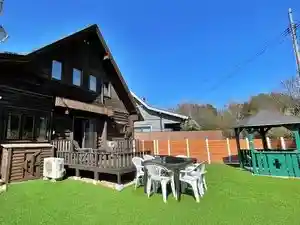
Shop
Yume Ichigo no Sato Farm Stand
Town farm-direct stand for strawberries and local produce
Yamamoto Winery Shop
Tasting and sales of strawberry and grape wines at Yamamoto Ichigo Farm
Sights
Tadokoro Tourist Grape Garden
Seasonal grape-picking farm in Yamamoto
casano-va
Local eatery and gathering spot in Takase
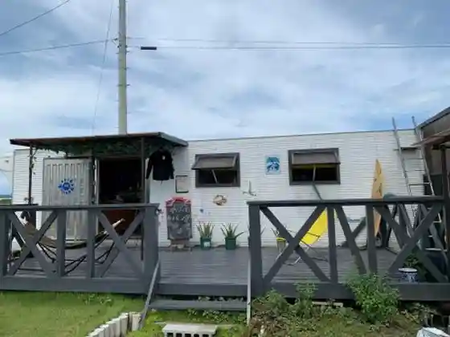
Miyama Mountain Foot Youth Forest
Forest recreation area at the foot of Mt. Miyama
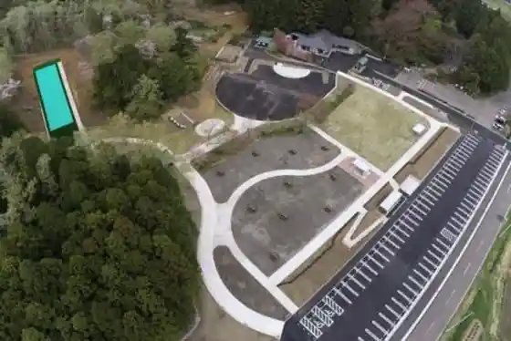
Yamamoto Winery
Post-quake winery producing strawberry and grape wines
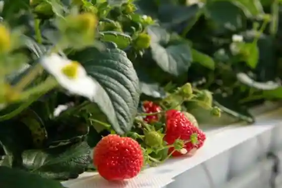
Yamamoto History and Folklore Museum
Town museum of local history and folklore
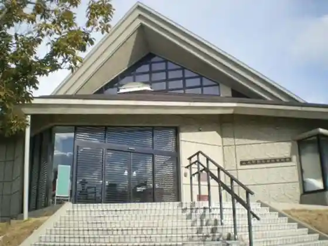
Yamamoto Ichigo Farm
Strawberry tourism farm with picking, cafe, and winery
Yamamoto Yume Ichigo no Sato (Sakamoto)
Farm-and-seafood direct sales stop in Sakamoto
MIGAKI FARM
Local farm experience stop in Yamamoto
TSUNAMI Harley Exhibition Hall
Harley motorcycle exhibit tied to tsunami recovery stories
Shihoyama
Scenic hill area spanning Yamamoto and neighboring towns
Ushibashi Park
Local park in the Yamadera district
Ojo Family Tea House Shikuntei
Historic tea house of the Ojo family in Sakamoto